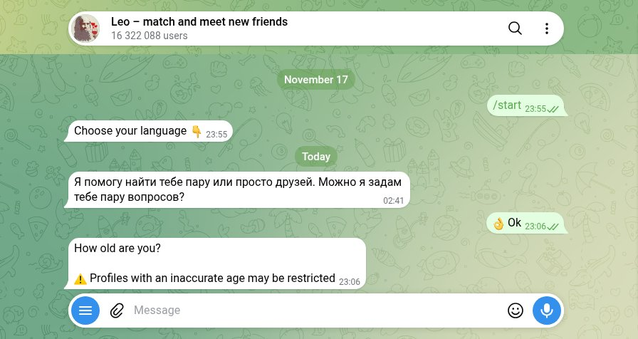

Telegram Bots for Making Friends: 30 Tried, 15 Never Replied
Telegram used to have a built-in way to find people around you. In September 2024 Pavel Durov announced it was gone: "We've removed the People Nearby feature, which was used by less than 0.1% of Telegram users, but had issues with bots and scammers." Search Telegram for "people nearby" today and you get bots that promise to do the same job. Search "find friends", "new friends" or "pen pal" and you get more.
In November 2026 I collected the friend-finding bots Telegram's own search returns for fifteen queries in English, Russian and Ukrainian, and messaged every one that might be one. The rule was simple: I would tap anything that didn't cost me personal data, and stop at the first question that did. 15 of the 30 never answered. Not one showed me another person. The biggest, with 16.3 million monthly users, asked for my age after a single tap.
How I tested
Everything here was decided before the first search, and written down, so the results couldn't steer the method.
- Where the bots came from. Telegram's global search, fifteen queries: find friends, make friends, new friends, friends bot, friendship, meet people, people nearby, nearby friends, pen pal, language exchange, and the Russian and Ukrainian words for dating, friends and "find friends". I kept only bots that show up for anyone, not ones the search suggested because of my own chat history.
- What counts as a friend-finding bot. Its own description or first message has to promise new friends, people to talk to, pen pals, language partners or people nearby. Dating-only bots, adult bots, anything about earning money and random anonymous chats were set aside and counted. Random anonymous chat has its own test: 44 anonymous chat bots, 12 that work.
- What I did in each chat. One
/start. Then only taps that give nothing away: an interface language, OK, continue, skip. At the first request for a phone number, location, photo, age, gender, name, city, a short bio, a channel subscription or a payment, I stopped and wrote down which one it was. I never gave any of them. - Pacing. At least 18 seconds between messages, and never on a night when the account had already sent more than 60, so no bot got flooded.
I never shared a phone number or a location with any of these bots. A bot that wanted either was going to hit the rule straight away, and that is the point: the question is how far you get before a bot needs something from you.
What Telegram search actually returns
Fewer bots than you would expect. The fifteen queries returned 40 bots visible to everyone, and most queries returned between one and five. Find friends returned one bot, pen pal one, language exchange three. The Russian query for "find friends" returned no bot in the global results at all. The widest was friends bot, with nine, and those nine included a cottage-town services bot, a trip-expenses app and a game that pays out in USDT.
One bot dominates. @leomatchbot (Leo Match) came up for five of the fifteen queries, in every language I used, and Telegram shows about 16.3 million monthly users on its profile (16,314,055 on 16 November, 16,322,088 two days later). The next biggest in the whole list is a "rate my face" bot with about 177,000. Most of the rest don't show a user count at all.
Sorting the 40 by their own words:
- 16 in scope by their description.
- 10 out by their description: 3 dating-only, 2 random anonymous chats, 1 earn-in-USDT game, and 4 that aren't about finding people (a friendship quiz, a trip-expenses app, an ad shell, a school pen-pal event).
- 14 with too little text to judge. Their first reply decided. All six that answered turned out to be out of scope: the cottage-town services bot, a submissions inbox for a channel, an anonymous flirting chat, a Mini App with a money bag emoji, an empty shell and the face-rating bot. The other eight never answered.
That leaves 30 bots messaged: the 16 in scope and the 14 I couldn't judge without asking.
Half of them never answered
I sent /start on 17 November between 23:56 and 00:08 Kyiv time. Fifteen bots replied within ten seconds. The other fifteen said nothing, and when I read the chats again about 23 hours later, still nothing.
Seven of the silent ones are in scope by their own description, and some of them promise exactly what Telegram took away: @tgnearby_bot ("Real-time Location Matching", 15,873 monthly users), @People_NearbyBot ("People Nearby brings great people together"), @pple_nearby_bot, @takemate_bot ("friends, matches, or dates"), @people_meet_bot, @language_exchange_bot and @your_znaimo_bot. A bot that doesn't answer /start usually means the server behind it is off. Its name stays in search anyway.
The People Nearby replacements
The query people nearby is the honest test of whether anyone filled the gap. It returned eight bots:
- 4 never answered (tgnearby, People_NearbyBot, pple_nearby_bot, nearby_peoplebot).
- 1 isn't live: @people_nearby_bot answers "We're hard at work creating the perfect tool" and promises to notify you when it's ready.
- 1 is a random anonymous chat, and 1 is an empty ad shell.
- 1 works, and it's an events app: @meetivity_bot collects meetups from Telegram groups in German cities. Its chat only gives you a help list ending "Everything else happens in the app." I sent its own
/weekcommand and got the same list back.
From nearby friends, @nearbybot answers "Find the people nearby you. Use /off to pause your subscription." That second line is the giveaway: it's built on Manybot, a bot builder for broadcast lists. There's nothing to tap and nobody to find. You've just subscribed to someone's mailing list.
None of the nearby bots that answered got as far as asking where I was. On Telegram a bot can't read your location by itself. The Bot API only has a reply-keyboard button that sends it when you press it, and the documentation says "the user's current location will be sent when the button is pressed. Available in private chats only." The same goes for your phone number. So if a bot has your location, you pressed that button.
Where each one stopped me
Nine bots in scope answered. Here is how far each one let me get without giving anything away.
| Bot | What it says it does | Where it stopped | Taps before that |
|---|---|---|---|
| @leomatchbot | "Find a match or just friends", 16.3 M monthly users | Age | 1 (OK) |
| @chat_bot | Chat with people around the world, 9,307 monthly users | Gender (question 1 of 3) | 0 |
| @Friendshipbot | Friend finding, in Persian | Join a channel first | 0 |
| @LanguagePracticeExchangeBot | Language practice partners | Members of a club only | 1 (English) |
| @meetivity_bot | Events in German cities | Everything is in the Mini App | 2 messages |
| @numo_date_bot | Parties, hanging out, love (Ukraine) | Sign up in the Mini App | 0 |
| @Taster100Bot | "Bot for dating", in Ukrainian | A broadcast list, nothing to tap | 0 |
| @nearbybot | "Find the people nearby you" | A broadcast list, nothing to tap | 0 |
| @people_nearby_bot | People nearby with shared interests | Not launched yet | 0 |
Three of the nine asked for personal data before showing me anyone: age, gender, a channel subscription. Two hand everything to a Mini App, one is a closed club, and three don't do any matching at all. None of the nine showed me a single person.
Before I started, I predicted that at least 60% of these bots would ask for personal data before showing anyone. That was wrong, just not in the direction I expected. Only 3 of the 16 in scope asked. Most of the rest never got that far, because they don't work.

The 16-million-user one
Leo Match is the bot Telegram search gives you for "new friends" and for the Russian and Ukrainian words for friends and dating. Its first message is a language menu. I didn't pick one, and about three hours later it moved on by itself, in Russian: "I'll help you find a match or just friends. Can I ask you a couple of questions?" with a single OK button. One tap, and the next message was:
How old are you?
⚠️ Profiles with an inaccurate age may be restricted
That's where the test stopped. It's a fair question for a dating bot, and the bot doesn't hide that it's one. But it shows how Telegram's friend-finding works in practice: the bot with the reach is a dating bot with a friends option, not a friends bot. @numo_date_bot works the same way, with modes for parties, hanging out and love. So does the silent @takemate_bot, whose description offers "friends, matches, or dates". If you want friends and nothing else, there isn't a bot of that size for it.
What a bot knows before you type anything
@chat_bot opened with "Welcome to Chat Bot, Charlie!" before I had typed a word. That isn't a trick. Pressing Start gives the bot your first name, your username if you have one, and your user ID. I covered what that means for "anonymous" bots in a separate test. For a friend-finding bot it means the profile has started before you agree to anything. The gender question is just the first thing it doesn't already have.
Everything past that is your choice. A bot can't take your location or phone number without you pressing a button that sends them, so every gate in the table above is a question you can refuse. Refusing just means the bot does nothing for you.
Did they message me afterwards?
I left every chat alone for at least 24 hours after my last tap, then read them all again. None of the fifteen silent bots had woken up, 47 hours after /start.
Seven bots had sent something I didn't ask for. Two were only finishing their own opening: Leo Match moving on from its language menu, and the cottage-town bot adding "if you have any questions, get in touch" ten minutes later. After its age question, Leo Match sent nothing more.
The other five wanted me back, or wanted something from me. @numo_date_bot wrote three times in its first 24 hours: "Choosing photos for your profile?", then "Time to find your people", then "Let's get you signed up!" @chat_bot took six minutes after /start to offer me "a random chat partner". @vozribot, a bot where people rate each other, twice sent me a stranger's age and city along with their rating of me, and asked me to rate them back. @WORDIN_FRIENDS_BOT sent an ad: four channel owners selling access to all their paid private channels for 850 roubles. And the channel inbox passed on an artist's invitation to their channel. (Corrected on 21 November 2026: my first read missed these last three, because my script filed every message with a picture as a reply to a file I had sent, and in this test I sent none.) Proportionally that's more than in my earlier tests: PDF bots wrote first 1 time in 75, temp-mail bots 3 in 65.
Then I sent /stop to 27 of them and /off to the two broadcast lists, and left out the channel inbox, where every message reaches a person. Seven of the 29 answered, and none said it had stopped anything. Leo Match read /stop as my age: "Enter a valid age. Numbers only. From 13 to 112". @chat_bot answered "You're not in a chat." If one of these keeps messaging you, block it.
Which one to use
If you want people near you, Telegram removed the feature that did it, and the bots named after it mostly don't answer. Of the eight that search returns for "people nearby", the only one doing anything useful is an events listing for Germany.
If a dating-style profile is fine, @leomatchbot is the one that actually runs, and it will ask for your age, then more, before you see anyone. Treat it as a dating bot with a friends setting, because that's what it says it is.
If it's a date you're after rather than friends, I ran the same test on 22 Telegram dating bots: nine of them only sent affiliate links, and not one showed me another person's profile.
For language practice, the bot that answered is a members-only club. A public group for the language you're learning is a better start, and you can check that a group is active before you join it. If what you want is a stranger to talk to right now, that's a random chat, and those have their own list, with the ones that still connect.
Whatever you try, the same rule as every bot test on this site: press Start, wait fifteen seconds, and if nothing comes back, move on.
Questions
Is there a Telegram bot to find friends?
Of 30 bots Telegram's own search returned for friend-finding queries in November 2026, 15 didn't answer at all and none showed me another person before asking for personal data. The biggest that works, @leomatchbot, is a dating bot with a friends option and asks for your age first.
What happened to People Nearby on Telegram?
Telegram removed it in September 2024. Pavel Durov wrote that it was used by less than 0.1% of users but had problems with bots and scammers, and said a "Businesses Nearby" feature for verified businesses would take its place. The bots named after People Nearby are third-party bots, not Telegram's feature.
Can a Telegram bot see my location?
Not on its own. A bot can show a button that sends your current location when you press it, and the Bot API allows that button only in private chats. If you don't press it, the bot doesn't have your location.
Why does a friends bot ask my age and gender first?
Most of them are matching bots: they build a profile and show it to other users, and age and gender are what the matching filters use. In this test, @leomatchbot asked for age after one tap and @chat_bot asked for gender as question one of three.
A Telegram bot that asks for nothing
Got friends already and need something to do with them? The free Party Game runs Truth or Dare, Never Have I Ever and Would You Rather as a Mini App inside Telegram, in English or Ukrainian. No profile, no channel to join, no age question.
Open the Party Game Looking for a stranger to chat with instead? See the anonymous chat bots that still connect.Related reading
- Telegram Dating Bots: 22 Tested, 9 Were Just Ad Links
- Telegram anonymous chat bots list: 44 tested, 12 work
- "Anonymous" Telegram bots still see your @username
- Anonymous Telegram bots: I tested 11, only 4 work
- Telegram games for 2 players: 4 of 11 bots work in a DM
- Fun Telegram bots: I opened 117, only 16 actually work